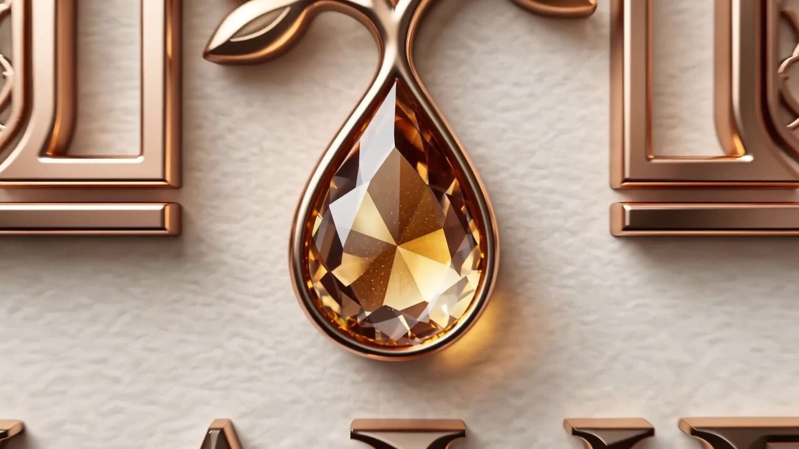

مايدي هاوس
Maydi House
دار عطور صومالية فاخرة، تحمل اسم مايدي، أندر لبان في العالم.
اكتشف أقسام الدارالعطر فنٌّ قبل أن يكون منتجاً.
التصميم والتصنيع والبيع والمواد الخام، تحت سقف واحد في مقديشو.

أسّسها عطّار.
أسّس محمد عبده دار مايدي هاوس في مقديشو. وهو مصمم عطور صومالي، تتلمذ على يد الخبير الكويتي المهندس سالم الجارالله.
ابتكر تركيبات عطرية أصيلة، وتعاون مع دور عطور في أنحاء الخليج العربي، ويعمل اليوم مستشاراً في ابتكار العطور. وتحمل الدار توقيعه: ابتكار بطابع كلاسيكي.
أربعة أقسام، وأصل واحد.
لكل قسم شريك يخدمه، وكلها تبدأ من أرض الصومال.
Our divisions
مايدي بوتانيكالز
Maydi Botanicalsاللبان والمر والراتنجات والزيوت العطرية الطبيعية النادرة من الصومال.
اطلب المواد الخامكل قسم يحمل اسم أثمن لبان على وجه الأرض.
شجرة البوسويليا · Boswellia
ينمو المايدي على شجرة واحدة، فوق منحدرات الحجر الجيري في شمال الصومال.
لحاؤها يتقشّر كالورق.
جرحٌ خفيف، فيسيل الراتنج.
يجفّ في الهواء دموعاً، ثم يُفرز باليد.


لماذا يثق بنا شركاؤنا.
مرخّصة من بلدية مقديشو، ومصدّقة من وزارة الخارجية الصومالية ومكتب محافظ إقليم بنادر.
- ٠١
الأصالة
نستمد هويتنا من أرض الصومال وثرواتها العطرية النادرة، ولا نساوم على هذا الإرث.
- ٠٢
الحِرفة
خبرة احترافية في التصميم، ولمسة إبداعية مقصودة.
- ٠٣
الشراكة
عملاؤنا شركاء في بناء علاماتهم، من الفكرة الأولى حتى السوق.
- ٠٤
الجودة
أعلى المعايير في كل مرحلة، من المادة الخام حتى المنتج النهائي.

المايدي أثمن لبان على وجه الأرض، ولا ينمو إلا في الصومال.
The most prized frankincense on earth, grown only in Somalia.